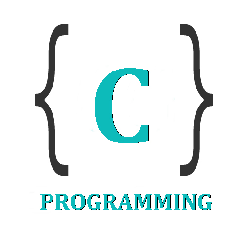
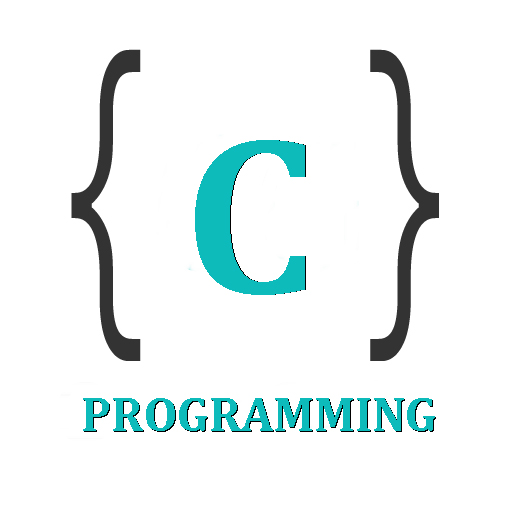

SOWRABH S ULLAL
Hi! I'm an Undergraduate Computer Science student at PESIT, Bangalore India.
I've worked mostly with Javascript to build some of my Undergraduate projects. Currently engaged in learning the frame works in JS and looking for an internship so that i can gain some practical knowledge in the IT field. Iam basically a Web engineer and interested in Neural Networks in browsers.You can see my resume here
EMAIL : sowrabhsullal@gmail.com
MOBILE NO : +91 9731784327
EDUCATION
PES UNIVERSITY ELECTRONIC CITY CAMPUS BANGALORE [PRESENT]
Bachelor Of Engineering
Computer Science
Agregate of 8.0 SGPA
SHARADA PU COLLEGE, MANGALORE [2014-2015]
Science PCMB
Agregate of 94% in PCM
ST.ALOYSIUS HIGH SCHOOL, MANGALORE [2006-2013]
Agregate of 85%
SKILLS


 



PROJECTS
(1) NApples
This web application that gives the real time data of the market orders of the apples from PubNub. PubNub is a global Data Stream Network that pioneers in real-time technologies. click here
(2) Blood-donation-management
Several lives are lost for want of blood, The main aim of this application is to create a connection between the donors and the acceptors. Blood management system is a web application that allows to access the whole information about the donors who is ready to donate the blood voluntarily within the same city. click here
(3) tiny-URL
Web application that can convert thousand's of longer url's stored in the csv/xlsx file into tinyURL. click here
For other mini projects click here
INTERESTS
Apart from being a web engineer, I enjoy most of my time being outdoors, I love travelling but have'nt travelled a lot , Whenever I have an opportunity to visit a new place, whether a village, city, mountain or seaside, I never miss it. It is so thrilling to see a new places, It gives me immense satisfaction and pleasure. I also follow a number of fantasy genre movies and television shows, Iam a huge fan of marvel movies & GOT.
© Sowrabh Ullal 2018